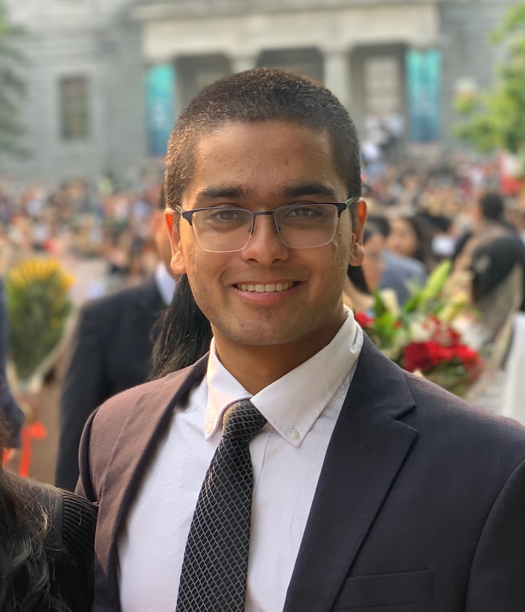

WHO ARE WE?

CHINMAY SINGH
Hi guys! I’m Chinmay Singh, an undergraduate student at the University of North Carolina at Chapel Hill. I’ve loved public speaking and biology since I can remember, and started BioCast in hopes of motivating others to learn more about a topic I love. I look forward to speaking to you soon!

PARTH SHIROLKAR
Hi everyone, I’m Parth Shirolkar, an undergraduate student at the University of North Carolina at Chapel Hill. I listen to plenty of podcasts during my own time, and thus created BioCast as a means to reach out and share my own interests with the community. I thoroughly love biology, and can’t wait to bring you new perspectives and information about the field!